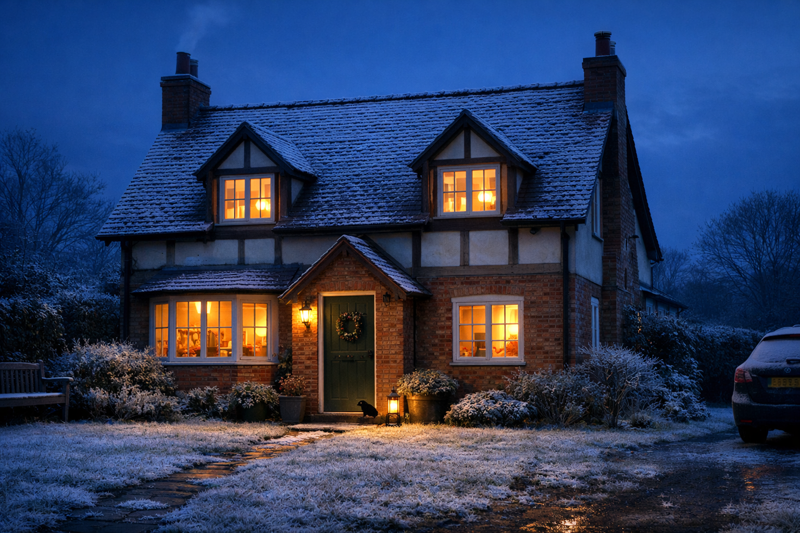

5 Ways to Pest-Proof Your Home This Winter
As fall arrives on Long Island and temperatures drop, rats, mice, cockroaches, squirrels and other pests start looking for warmth and shelter indoors. Prevention is always better — and cheaper — than a full-blown infestation. Here are five practical steps to protect your home this winter.
the Barron team
NYSDEC Reg #17056 • 4 min read

Why Winter Pest-Proofing Matters
Every fall, as Long Island weather turns cold and damp, pests that have been happily living outdoors start seeking warmth, shelter and food inside our homes. Mice, rats, cockroaches, stink bugs, cluster flies, squirrels and even raccoons will exploit any weakness in your property’s defenses to get in.
The good news? Most pest problems are preventable. A few hours spent exclusion-proofing your home now can save you hundreds of dollars — and a lot of stress — later on. Whether you live in Suffolk County, Nassau County, The Hamptons or anywhere across Long Island, these five steps will help keep unwanted visitors out this winter.
1. Seal Gaps and Entry Points
This is the single most important thing you can do. Mice can squeeze through a gap as small as 1/4 inch — about the width of a pencil. Rats need only 1/2 inch, roughly the diameter of a dime. If you can slide a pen into a gap, a mouse can get through it.
Check carefully around:
- Pipes, cables and vents where they enter the building
- Gaps around doors and windows, especially at the base
- Foundation vents — fit hardware cloth or mesh covers to keep rodents out while maintaining ventilation
- Where dryer vents, AC lines and utility pipes meet the wall
- Gaps under exterior doors — fit weather seals or door sweeps
For smaller gaps, pack copper mesh or steel wool tightly into the hole and seal over it with silicone caulk or expanding foam. Rodents can’t chew through the metal. For larger gaps, use hardware cloth, cement or metal flashing. Never rely on expanding foam alone — rats and mice will chew straight through it.
2. Secure Your Food Sources
Pests come indoors for three things: warmth, shelter and food. Remove the food and you remove a major incentive. Here’s what to do:
- Store dried goods in sealed containers. Use glass or thick plastic containers, not thin bags or cardboard boxes that rodents can chew through.
- Don’t leave pet food out overnight. Pick up bowls and store pet food in sealed bins.
- Clean up crumbs and spills promptly. Pay particular attention to behind the stove and under kitchen cabinets.
- Keep bird feeders away from the house and use squirrel-proof models. Spilled bird seed is one of the biggest attractants for rats and mice.
- Maintain your compost bin. Keep it well-managed and never leave it open. Turn it regularly and avoid adding cooked food.
3. Manage Your Yard and Outdoor Spaces
Your yard can either be a pest highway or your first line of defense. A bit of fall cleanup makes a huge difference:
- Cut back vegetation touching the house. Overhanging branches, climbing vines and dense shrubs against walls give rats, mice and squirrels a direct route to your roof and attic.
- Clear leaf litter from around the foundations. Piles of leaves provide cover and nesting material.
- Store firewood away from the building and raised off the ground on a rack. Woodpiles against the house are ideal harborage for rodents and insects.
- Fix leaking faucets and clear standing water. Pests need water too — removing water sources makes your property less attractive.
- Keep trash cans sealed with tight-fitting lids. Overflowing or open garbage cans are an easy food source for rats, raccoons and skunks.
4. Check Your Attic and Roof
Attics are one of the most common places we find rodent activity in Long Island homes, and they’re often the first point of entry. Squirrels, roof rats and mice are excellent climbers and will exploit any weakness in your roofline.
Take a flashlight up into your attic and check for:
- Gaps where roof tiles meet the eaves — even small gaps can let mice in
- Damaged or rotting soffits and fascia boards
- Gaps around plumbing vents and pipes that pass through the roof
- Signs of activity — droppings, gnaw marks or shredded nesting material
- Disturbed attic insulation — rodents will tunnel through it and use it for nesting
5. Don’t Forget Your Sewer Lines and Drains
This is the one most Long Island homeowners overlook, and it’s one of the most common rat entry points we find. Broken, cracked or collapsed sewer lines give rats a direct route from the town sewer system right into your property — a huge issue in older neighborhoods with clay-tile sewer laterals.
Rats are strong swimmers and can navigate through P-traps with ease. If toilet seals are faulty or missing, rats can even enter your home through the toilet bowl. It sounds unlikely, but we see it regularly across Long Island.
If you keep finding rats in your property despite treatment, there’s a good chance the problem is coming from your sewer lateral. A sewer camera inspection can identify breaks, displacements and missing caps that are letting rats in. Barron Pest Control can arrange this for you as part of a comprehensive IPM treatment plan.
When to Call a Professional
Prevention is always the first step, but if you’ve already spotted signs of pest activity — droppings, gnaw marks, scratching noises at night, or a musty smell — then proofing alone won’t solve the problem. You need to deal with the existing infestation first.
A NYSDEC-licensed pest controller can identify exactly what you’re dealing with, treat it effectively using Integrated Pest Management methods, and then exclusion-proof your property to stop it happening again. Store-bought traps and poisons often make the problem worse by scattering pests to new areas of the building.
If you’re on Long Island and want to get your home pest-proofed before winter sets in, give us a call. We offer free inspections with honest, transparent pricing — and we won’t try to sell you something you don’t need. That’s the Barron difference.
Want Your Home Pest-Proofed This Winter?
Get in touch for a free, no-obligation inspection. We cover Suffolk County, Nassau County, The Hamptons and all of Long Island — available 24/7/365.